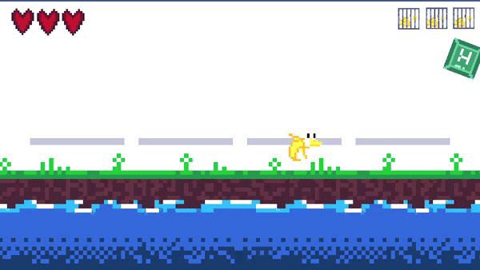

Summary
I worked as part of a team to create a Banana-Duck themed game in 24 hours during the in-person 2022 Quackathon organised by The Dundee Computing Society,
our game ended up being selected by Unity Technologies (One of multiple sponsors at the event) as the winning team.

My part was making the assets and getting specifically movement and other parts of gameplay made.

The game itself was made in Unity.
BCS article on the event